| Name | Image | Rarity | Type | Cost | Description |
|---|
| Nescience | 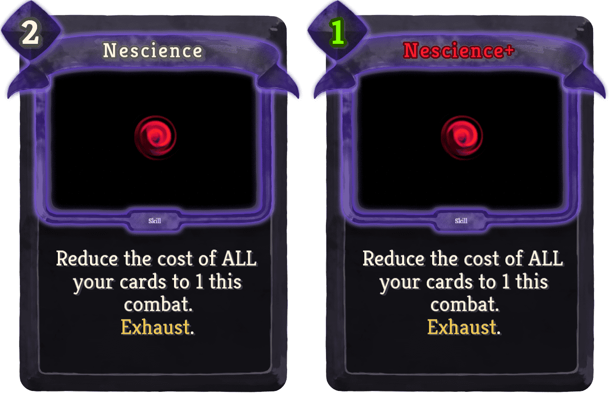 | Special | Skill | 2 (1) | Reduce the cost of ALL your cards to 1 this combat. Exhaust. |
| Pulse |  | Special | Attack | 2 | Ethereal. When this card is drawn, deal 30 (38) damage and apply 2 (3) Vulnerable to ALL enemies. |
| Defend | 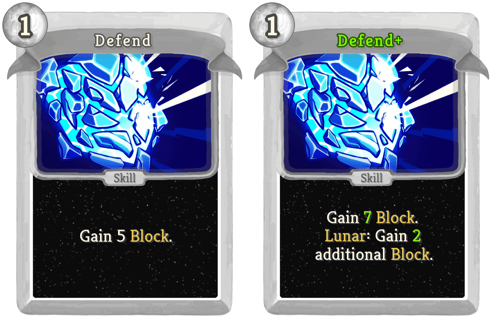 | Basic | Skill | 1 | Gain 5 (7) Block.(astrologer:Lunar: Gain !M! additional Block.) |
| Guiding Star |  | Basic | Skill | 0 | astrologer:Star. Apply 2 (3) astrologer:Starlit. |
| Strike |  | Basic | Attack | 1 | Deal 6 (8) damage.(astrologer:Solar: Deal !M! additional damage.) |
| The Fool |  | Basic | Attack | 0 | Innate. Gain 7 (9) Block. Deal 7 (9) damage. Stellar 0: Exhaust. |
| Ominous Star |  | Special | Skill | 1 (0) | astrologer:Star. |
| Comet Strike | 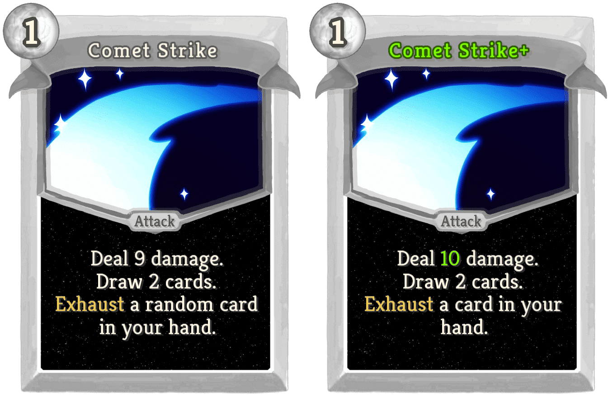 | Common | Attack | 1 | Deal 9 (10) damage. Draw 2 cards. Exhaust a random (not random)card in your hand. |
| Conjunction |  | Common | Skill | 1 | Ethereal. When this card is drawn, gain 9 (12) Block. |
| Eclipse | 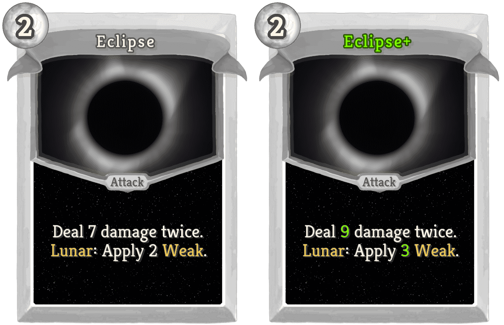 | Common | Attack | 2 | Deal 7 (9) damage twice. astrologer:Lunar: Apply 2 (3) Weak. |
| Frozen Star | 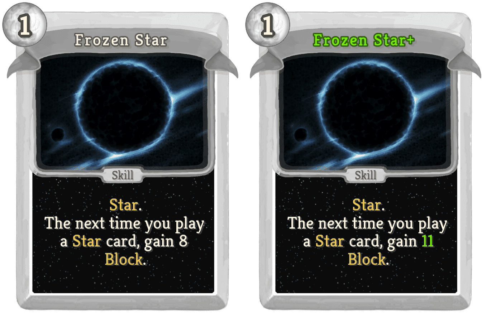 | Common | Skill | 1 | astrologer:Star. The next time you play a astrologer:Star card, gain 8 (11) Block. |
| Meteor Shower | 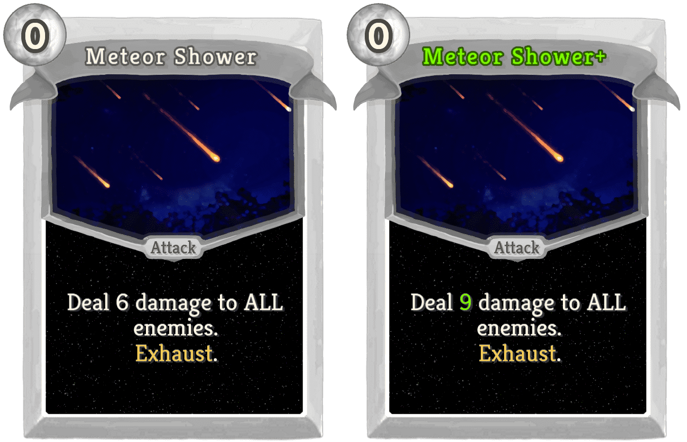 | Common | Attack | 0 | Deal 6 (9) damage to ALL enemies. Exhaust. |
| Moonlight |  | Common | Skill | 1 | Gain 7 (9) Block. astrologer:Lunar: Draw 2 (3) cards. |
| Nebula | 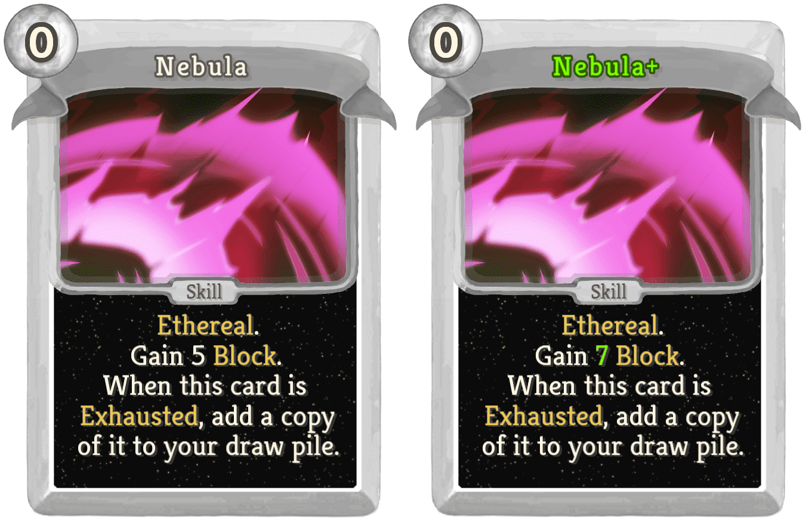 | Common | Skill | 0 | Ethereal. Gain 5 (7) Block. When this card is Exhausted, add a copy of it to your draw pile. |
| Opposition | 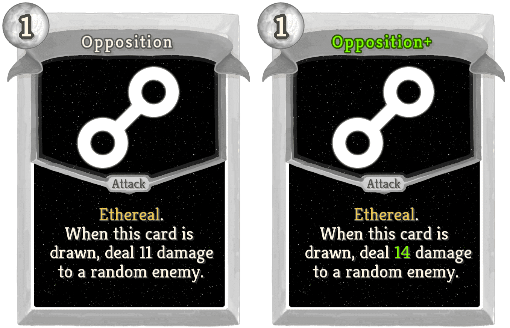 | Common | Attack | 1 | Ethereal. When this card is drawn, deal 11 (14) damage to a random enemy. |
| Radiance | 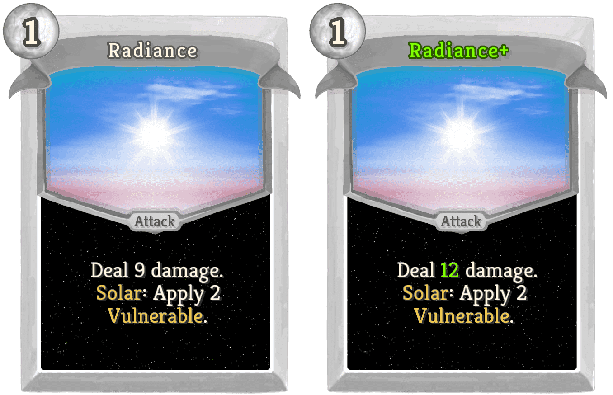 | Common | Attack | 1 | Deal 9 (12) damage. astrologer:Solar: Apply 2 Vulnerable. |
| Read The Stars |  | Common | Skill | 1 | Gain 5 (7) Block for each astrologer:Star in your hand. |
| Solar Flare |  | Common | Skill | 1 | Apply 2 (3) astrologer:Starlit and trigger it once. |
| Stardust |  | Common | Skill | 1 | Gain Block equal to the current astrologer:Stellar_Phase. Draw a (!M!) card(s). |
| Still |  | Common | Skill | 1 | Gain 10 (14) Block. The astrologer:Stellar_Phase cannot change for 2 turns. |
| Cataclysm | 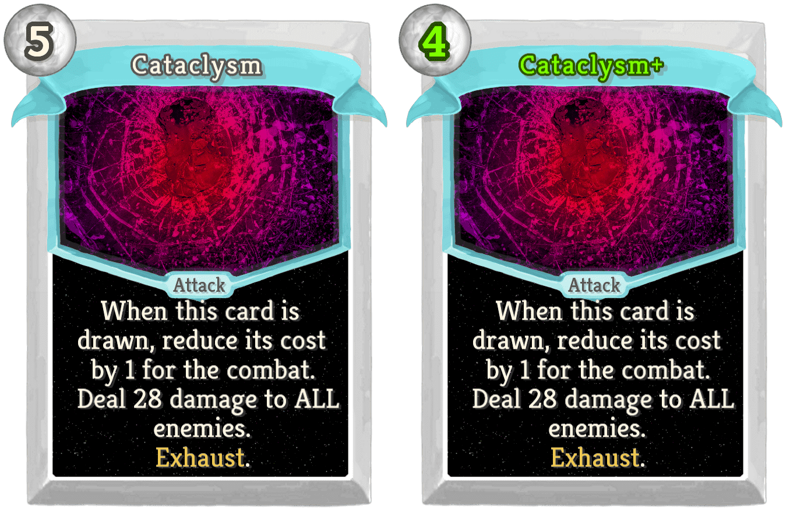 | Uncommon | Attack | 5 (4) | When this card is drawn, reduce its cost by 1 for the combat. Deal 28 damage to ALL enemies. Exhaust. |
| Confirmation |  | Uncommon | Power | 1 | Shuffle an Ominous Star into your draw pile. Whenever you draw an Ominous Star, deal 8 (13) damage to ALL enemies. |
| Cosmic Expanse | 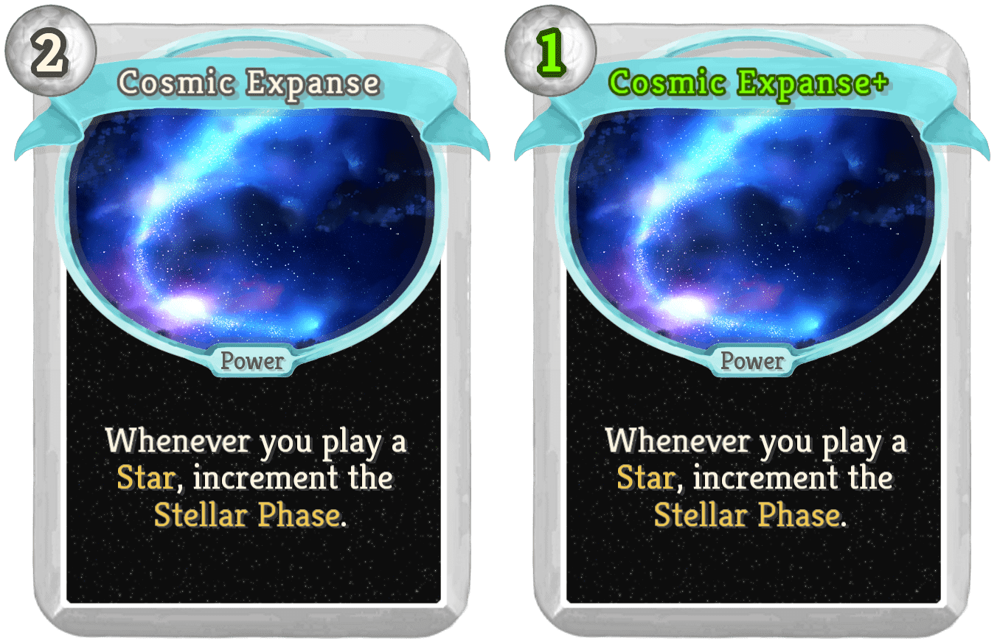 | Uncommon | Power | 2 (1) | Whenever you play a astrologer:Star, increment the astrologer:Stellar_Phase. |
| Crystal Ball | 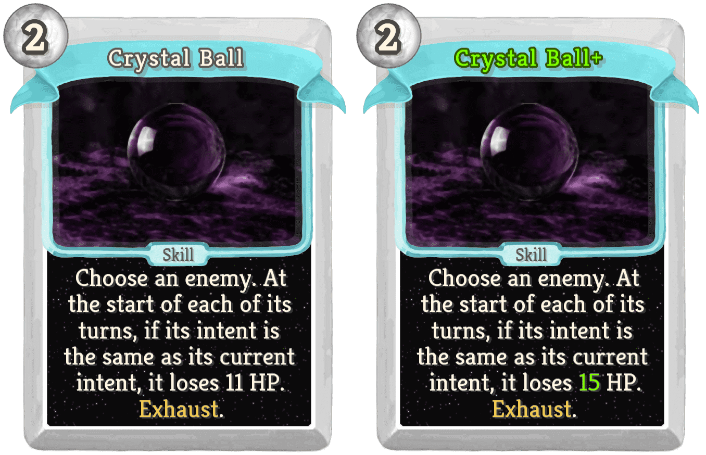 | Uncommon | Skill | 2 | Choose an enemy. At the start of each of its turns, if its intent is the same as its current intent, it loses 11 (15) HP. Exhaust. |
| Divination |  | Uncommon | Skill | 1 | Put a (any number of) card(s) from your hand onto the bottom of your draw pile. Draw 3 cards. |
| Fading Star |  | Uncommon | Skill | 1 | astrologer:Star. Gain 10 (14) Block. Exhaust. |
| Fireball | 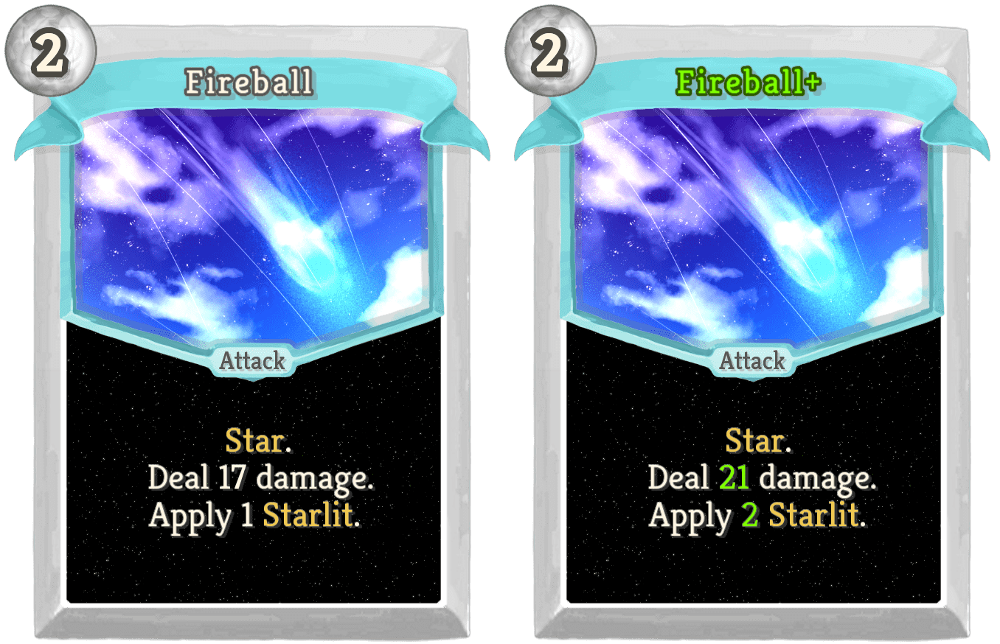 | Uncommon | Attack | 2 | astrologer:Star. Deal 17 (21) damage. Apply 1 (2) astrologer:Starlit. |
| Glass Star |  | Uncommon | Skill | 1 | astrologer:Star. Exhaust the next card you play and gain Block equal to 6 (8) times its cost. |
| Glimpse | 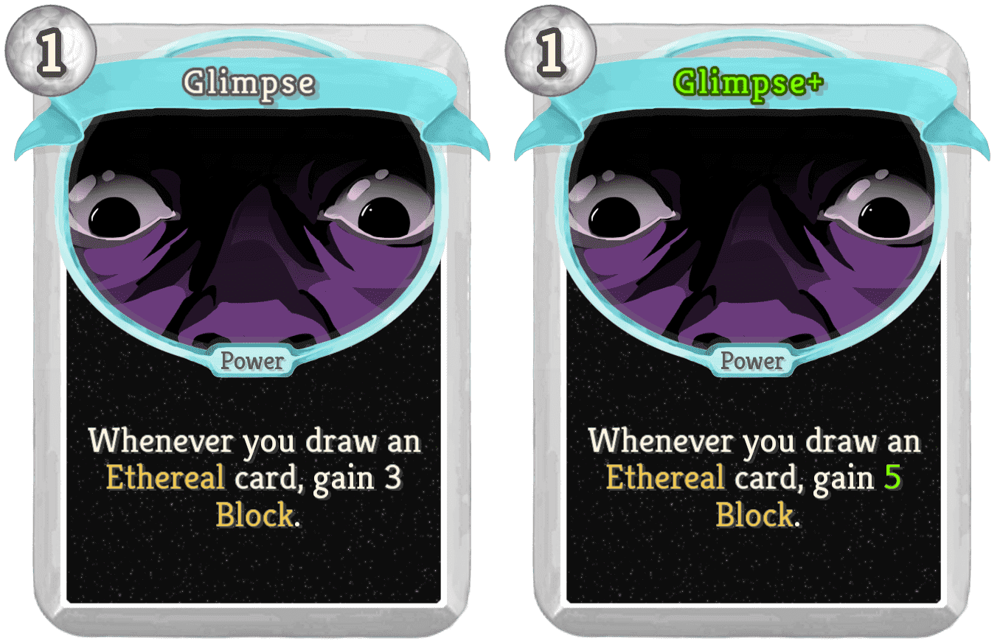 | Uncommon | Power | 1 | Whenever you draw an Ethereal card, gain 3 (5) Block. |
| Judgement | 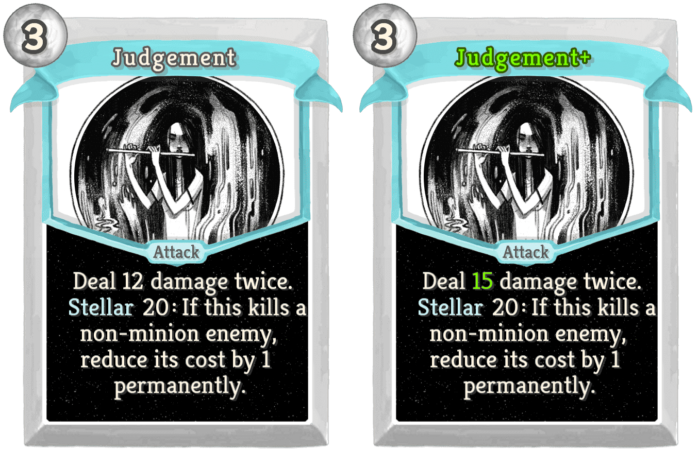 | Uncommon | Attack | 3 | Deal 12 (15) damage twice. Stellar 20: If this kills a non-minion enemy, reduce its cost by 1 permanently. |
| Justice | 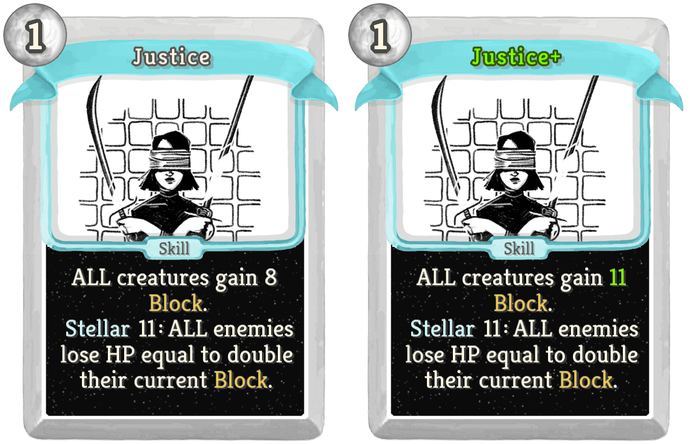 | Uncommon | Skill | 1 | ALL creatures gain 8 (11) Block. Stellar 11: ALL enemies lose HP equal to double their current Block. |
| Lonely Star |  | Uncommon | Skill | 1 | astrologer:Star. Ethereal. When this card is drawn, draw 2 (3) cards. |
| Neutron Star |  | Uncommon | Attack | X | astrologer:Star. Apply X astrologer:Starlit. Deal 2 (3) damage for each stack of astrologer:Starlit the enemy has. |
| Novile | 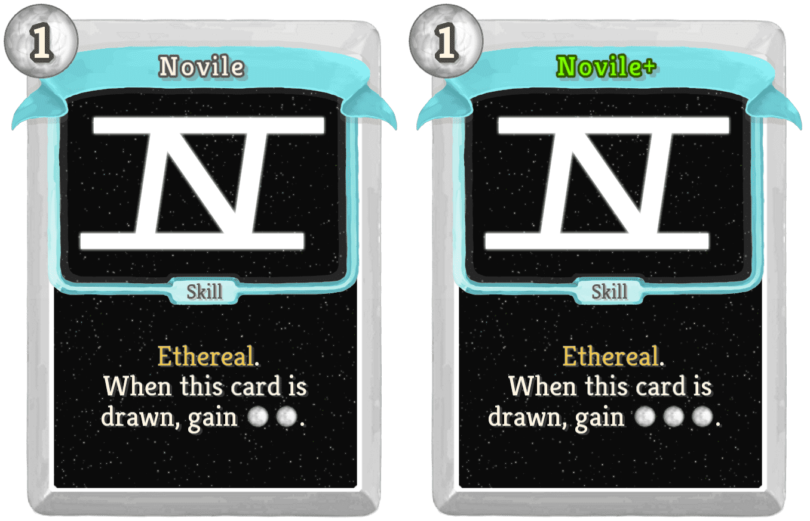 | Uncommon | Skill | 1 | Ethereal. When this card is drawn, gain [E] [E] ([E]). |
| Observe | 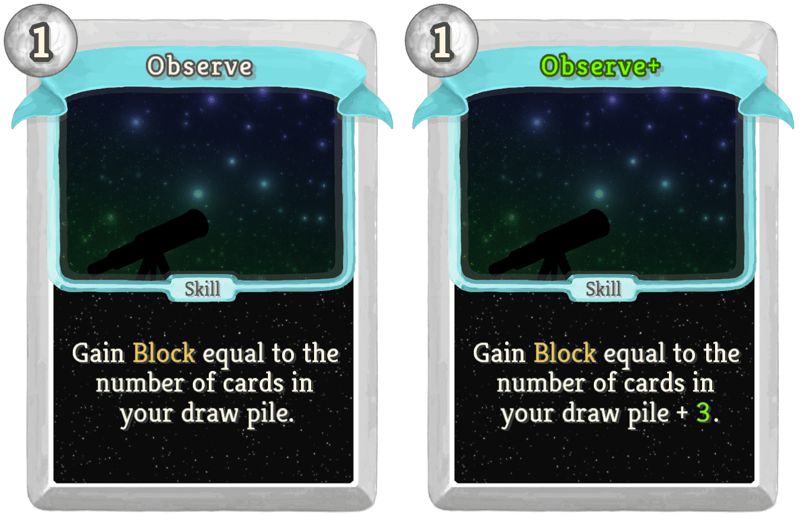 | Uncommon | Skill | 1 | Gain Block equal to the number of cards in your draw pile (+ !M!). |
| Premeditation |  | Uncommon | Skill | 1 (0) | Draw the bottom card of your draw pile, then play and Exhaust it. |
| Prestidigitation | 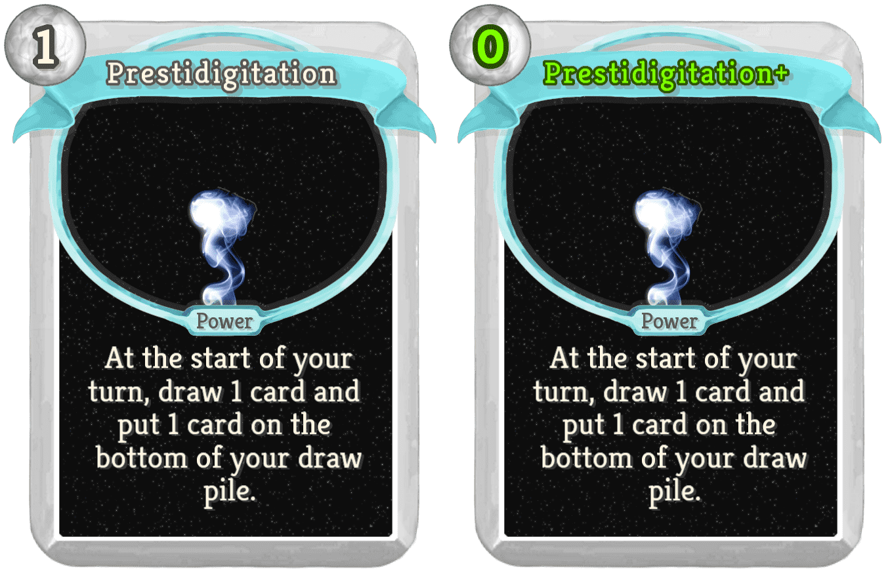 | Uncommon | Power | 1 (0) | At the start of your turn, draw 1 card and put 1 card on the bottom of your draw pile. |
| Prismatic | 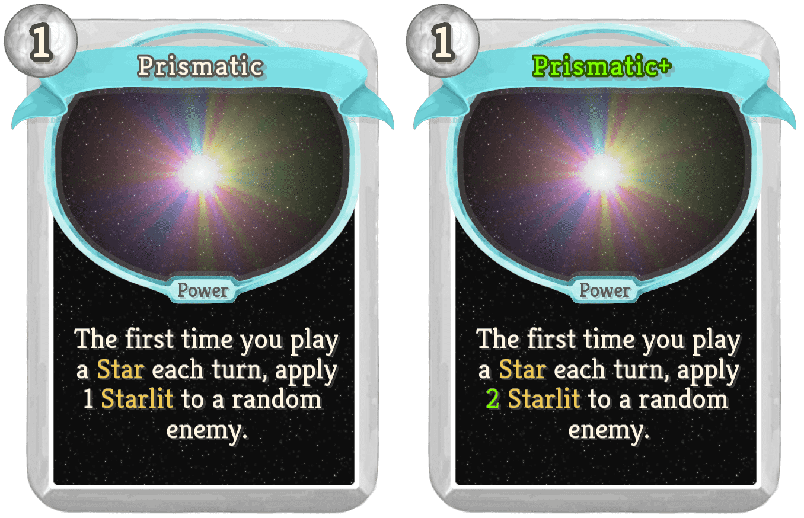 | Uncommon | Power | 1 | The first time you play a astrologer:Star each turn, apply 1 (2) astrologer:Starlit to a random enemy. |
| Quincunx | 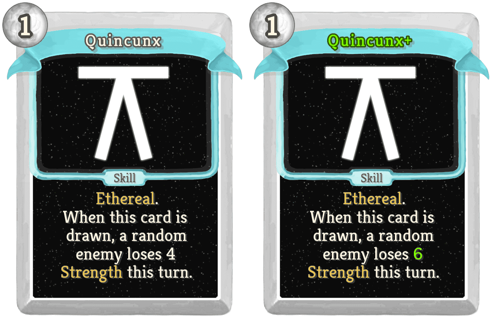 | Uncommon | Skill | 1 | Ethereal. When this card is drawn, a random enemy loses 4 (6) Strength this turn. |
| Retelling |  | Uncommon | Skill | 0 | Shuffle your hand into your draw pile, then put that many (plus !M!) cards from your discard pile into your hand. Exhaust. |
| Shine | 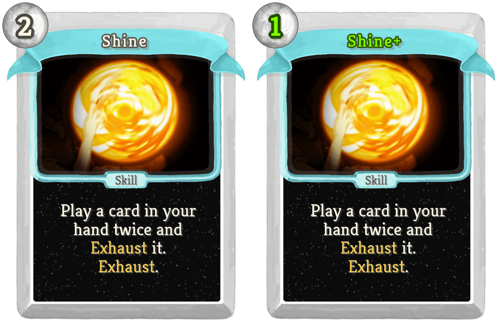 | Uncommon | Skill | 2 (1) | Play a card in your hand twice and Exhaust it. Exhaust. |
| Shining Star |  | Uncommon | Skill | 1 | astrologer:Star. Ethereal. When this card is drawn, apply 3 (4) astrologer:Starlit to a random enemy. |
| Shooting Star |  | Uncommon | Skill | 0 | astrologer:Star. (Ethereal.)Draw a card. When this card is Exhausted, add a copy of it to your draw pile. |
| Star Of Change | 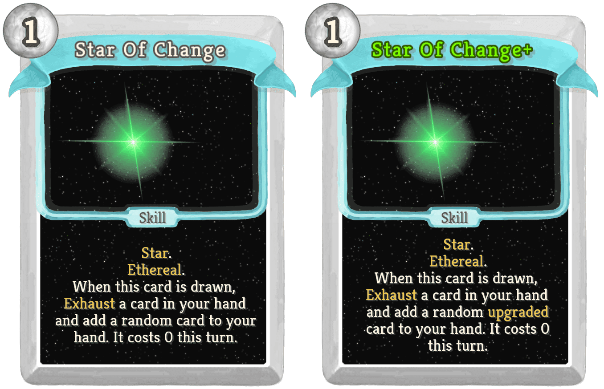 | Uncommon | Skill | 1 | astrologer:Star. Ethereal. When this card is drawn, Exhaust a card in your hand and add a random (upgraded) card to your hand. It costs 0 this turn. |
| Star Of Regret |  | Uncommon | Attack | 1 | astrologer:Star. Deal 8 (10) damage. When this card is Exhausted, deal twice as much damage to ALL enemies. |
| Star of Courage | 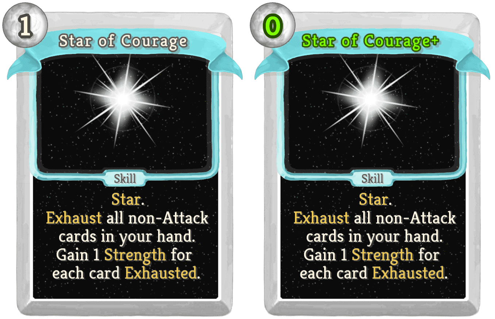 | Uncommon | Skill | 1 (0) | astrologer:Star. Exhaust all non-Attack cards in your hand. Gain 1 Strength for each card Exhausted. |
| Star of Misfortune | 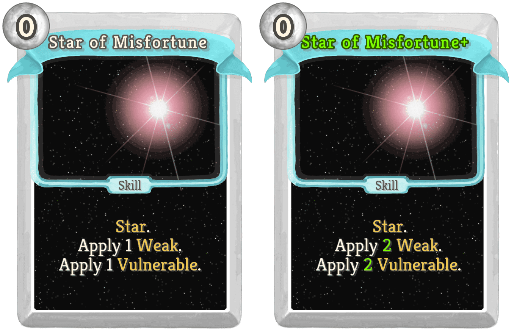 | Uncommon | Skill | 0 | astrologer:Star. Apply 1 (2) Weak. Apply 1 (2) Vulnerable. |
| Strength | 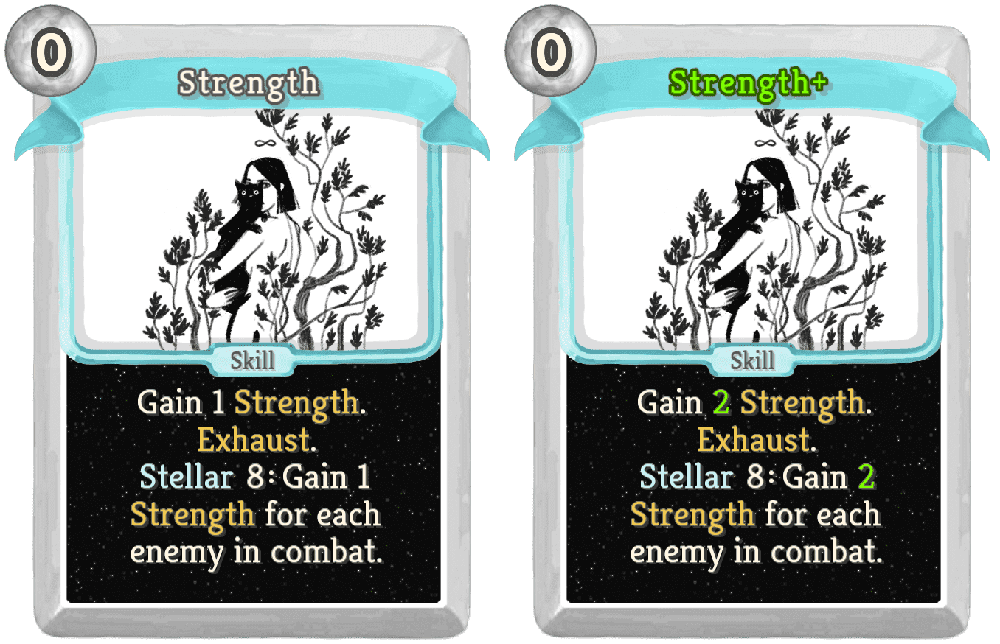 | Uncommon | Skill | 0 | Gain 1 (2) Strength. Exhaust. Stellar 8: Gain 1 (2) Strength for each enemy in combat. |
| Sunrise |  | Uncommon | Skill | 1 | Draw 2 (3) cards. Increase the maximum astrologer:Stellar_Phase by 2 (3). astrologer:Solar: Double this card's effect. |
| Temperance |  | Uncommon | Skill | 1 (0) | Stellar 14: Heal HP equal to the number of Stellar cards in your deck. Exhaust. |
| The Devil |  | Uncommon | Attack | 0 | Deal 10 (14) damage. If this does not kill the enemy, lose 6 HP. Stellar 15: Deals additional damage equal to your missing health. |
| The Emperor |  | Uncommon | Skill | 1 | Enemy loses 4 (6) Strength this turn. Stellar 4: Enemy loses three times as much Strength. Exhaust. |
| The Empress | 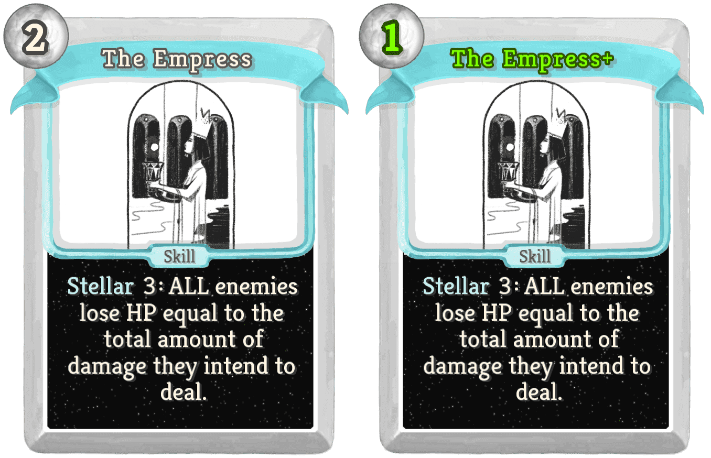 | Uncommon | Skill | 2 (1) | Stellar 3: ALL enemies lose HP equal to the total amount of damage they intend to deal. |
| The Hanged Man | 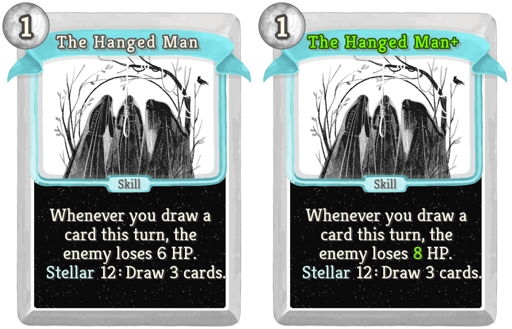 | Uncommon | Skill | 1 | Whenever you draw a card this turn, the enemy loses 6 (8) HP. Stellar 12: Draw 3 cards. |
| The Hermit |  | Uncommon | Skill | 1 | Gain 2 (3) Block for each card played this turn. Stellar 9: Draw a card from the bottom of your draw pile. It costs 1 less this turn. |
| The Hierophant | 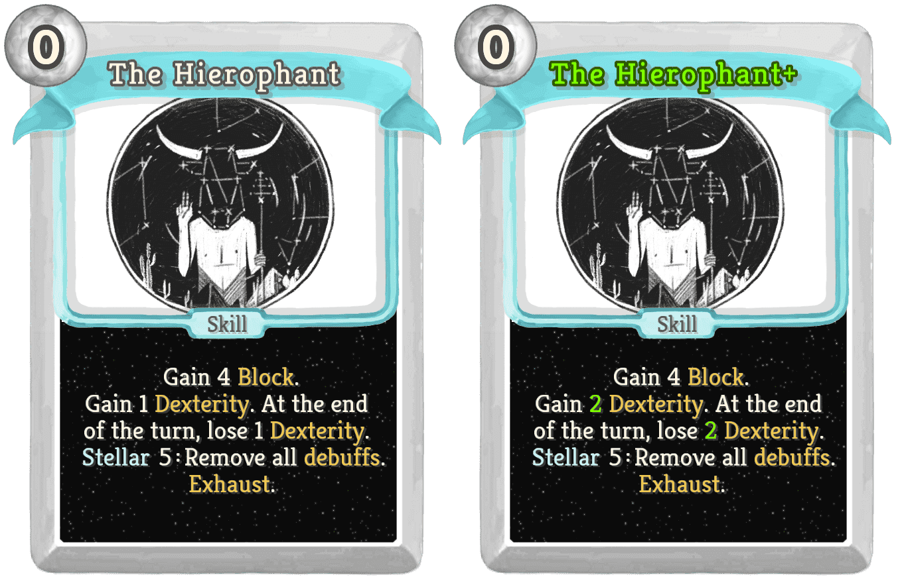 | Uncommon | Skill | 0 | Gain 4 Block. Gain 1 (2) Dexterity. At the end of the turn, lose 1 (2) Dexterity. Stellar 5: Remove all debuffs. Exhaust. |
| The High Priestess | 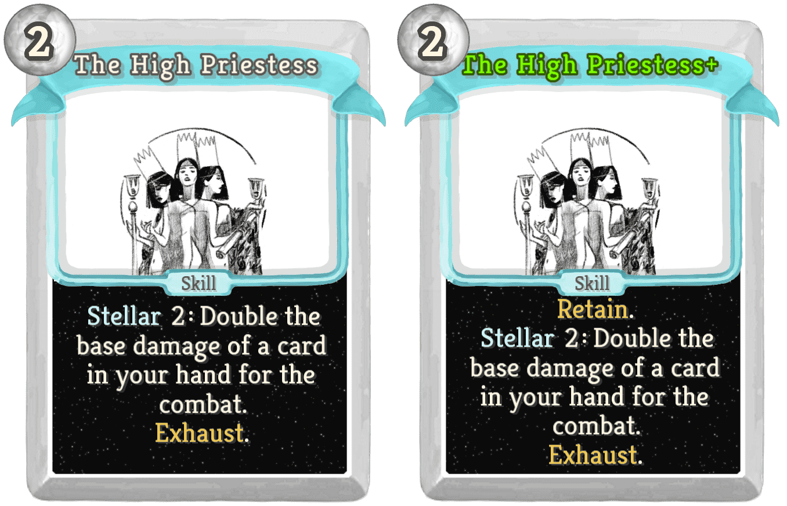 | Uncommon | Skill | 2 | (Retain.)Stellar 2: Double the base damage of a card in your hand for the combat. Exhaust. |
| The Lovers |  | Uncommon | Skill | 1 (0) | Exchange the costs of two cards in your hand for the rest of combat. Exhaust. Stellar 6: The chosen cards will be played twice the next time you play them. |
| The Moon |  | Uncommon | Skill | 2 | astrologer:Lunar: Draw cards until your hand is full. Stellar 18: Gain 3 (4) Block for each card drawn. |
| The Star | 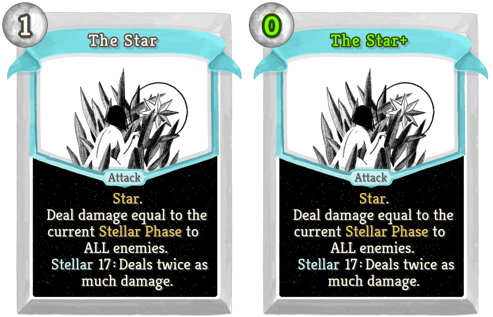 | Uncommon | Attack | 1 (0) | astrologer:Star. Deal damage equal to the current astrologer:Stellar_Phase to ALL enemies. Stellar 17: Deals twice as much damage. |
| The Tower |  | Uncommon | Attack | 2 | Deal 20 (24) damage to a random enemy. Stellar 16: Deal 20 (24) damage to a random enemy 1 additional times. |
| Alignment | 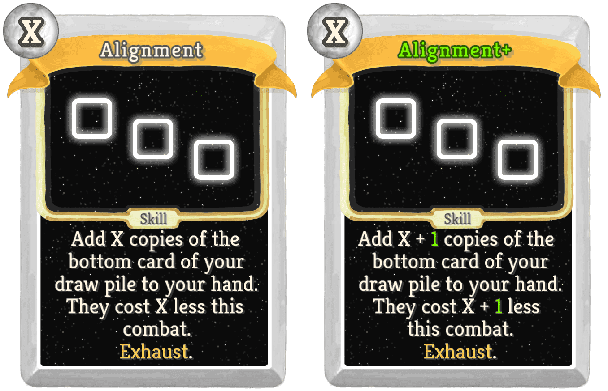 | Rare | Skill | X | Add X (+ !M!) copies of the bottom card of your draw pile to your hand. They cost X (+ !M!) less this combat. Exhaust. |
| Astral Form |  | Rare | Power | 3 | Ethereal. (not Ethereal.) ALL your cards are astrologer:Stars. |
| Black Hole |  | Rare | Attack | 2 | Purge all cards in your Exhaust pile. Deal 5 (7) damage for each Purged card. Exhaust. |
| Dark Matter |  | Rare | Power | 1 | (Innate.)The first time a card is Exhausted each turn that is not a Status or Curse, add a copy of it to your draw pile. |
| Death | 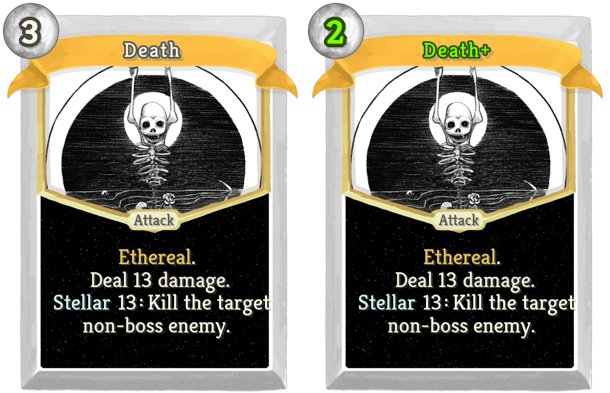 | Rare | Attack | 3 (2) | Ethereal. Deal 13 damage. Stellar 13: Kill the target non-boss enemy. |
| Fate | 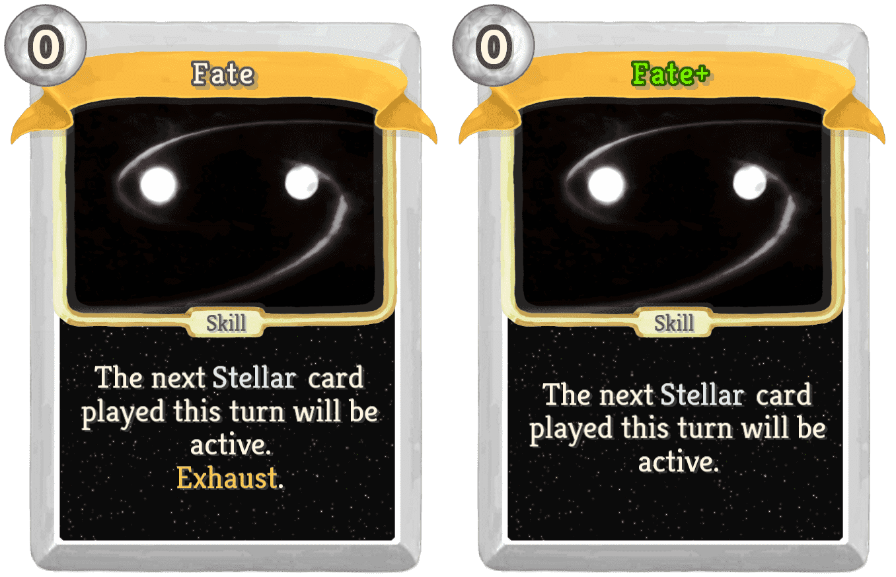 | Rare | Skill | 0 | The next Stellar card played this turn will be active. Exhaust. (not Exhaust.) |
| Heat Death | 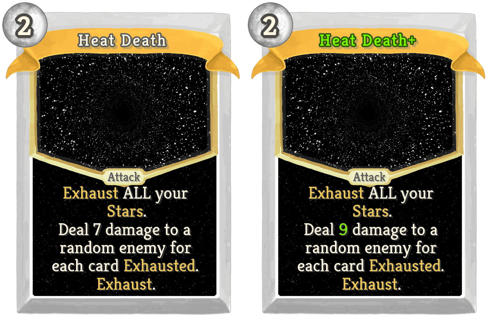 | Rare | Attack | 2 | Exhaust ALL your astrologer:Stars. Deal 7 (9) damage to a random enemy for each card Exhausted. Exhaust. |
| Nova |  | Rare | Power | 1 | Trigger astrologer:Starlit 1 (2) time(s) at the end of your turn. |
| Premonition | 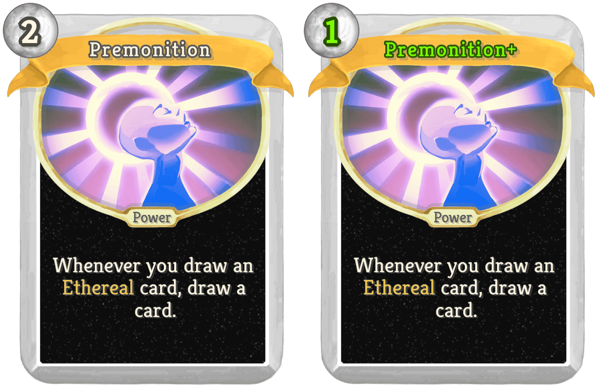 | Rare | Power | 2 (1) | Whenever you draw an Ethereal card, draw a card. |
| Reject Reality | 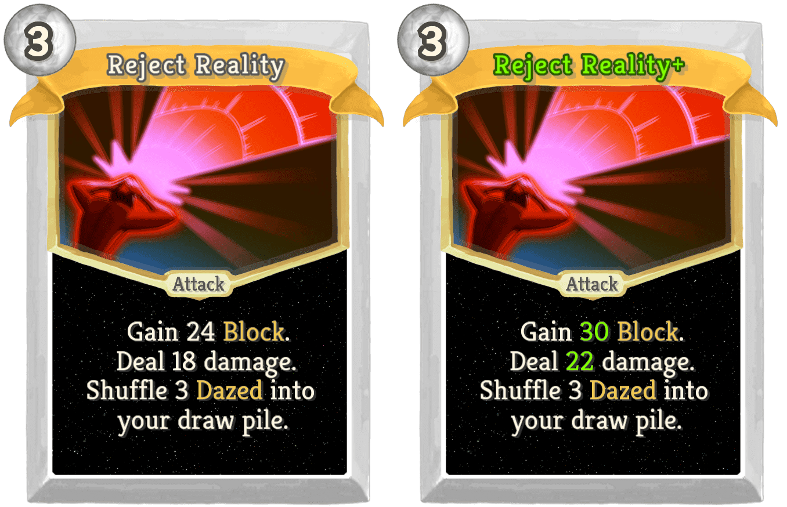 | Rare | Attack | 3 | Gain 24 (30) Block. Deal 18 (22) damage. Shuffle 3 Dazed into your draw pile. |
| The Chariot |  | Rare | Power | 2 (1) | Gain 10 Temporary_HP. Stellar 7: Gain 1 Intangible. |
| The Magician |  | Rare | Attack | 1 | Deal 11 damage. Stellar 1: Put a card from your exhaust pile onto the bottom of your draw pile. Exhaust. (not Exhaust.) |
| The Sun |  | Rare | Attack | 2 | astrologer:Star. astrologer:Solar: Deal 16 (22) damage to ALL enemies. Stellar 19: ALL enemies lose 33 (44) HP. |
| The World | 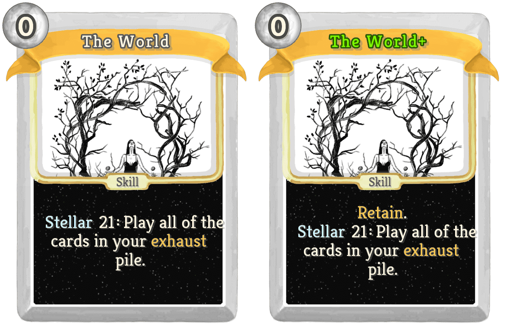 | Rare | Skill | 0 | (Retain.)Stellar 21: Play all of the cards in your exhaust pile. |
| Trine |  | Rare | Skill | 1 (0) | Ethereal. When this card is drawn, the next card you play this turn is played twice. |
| Wheel of Fortune | 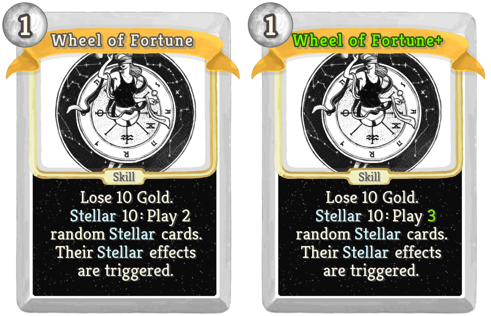 | Rare | Skill | 1 | Lose 10 Gold. Stellar 10: Play 2 (3) random Stellar cards. Their Stellar effects are triggered. |
| Wish |  | Rare | Skill | 4 | Costs 1 less [E] for each astrologer:Star card Exhausted this combat. Gain 12 (18) Block. Draw 2 cards. |
{kind=link}
{kind=link}
{kind=link}
{kind=link}
{kind=link}
{kind=link}
{kind=link}
{kind=link}
{kind=link}
{kind=link}
{kind=link}
{kind=link}
{kind=link}
{kind=link}
{kind=link}
{kind=link}
{kind=link}
{kind=link}
{kind=link}
{kind=link}
{kind=link}
{kind=link}
{kind=link}
{kind=link}
{kind=link}
{kind=link}
{kind=link}
{kind=link}
{kind=link}
{kind=link}
{kind=link}
{kind=link}
{kind=link}
{kind=link}
{kind=link}
{kind=link}
{kind=link}
{kind=link}
{kind=link}